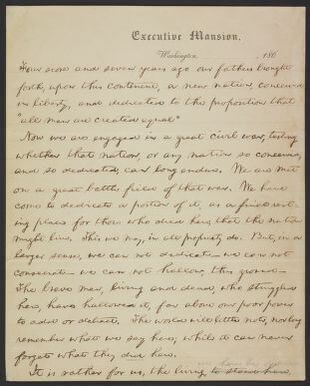

Statistics
Union statistics are as followed: The total dead reached a number of
365,000. 110,000 were killed in action, 230,000 died from accidents
or diseases, 25,000-30,000 died in Confederate prisons. 282,000 were
wounded and 181,193 captured. Total casualties and losses: 828,000+.
Confederate statistics are as followed: The total dead reacher a
number of 290,000. 94,000 killed in action, 26,000-31,000 died in
Union prisons. 137,000 were wounded and 436,658 captured. Total
casualties and losses: 864,000+.
